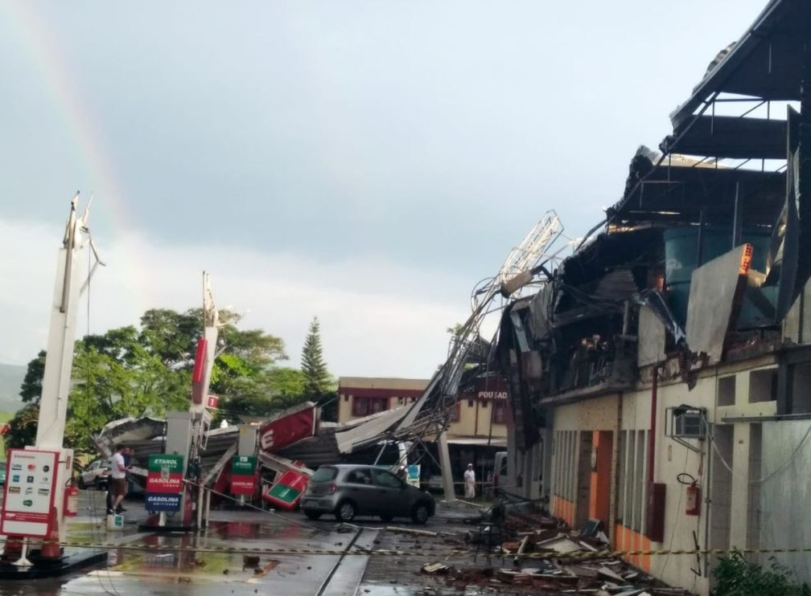

Parte do posto de gasolina ficou destruída em Nova Era
Chuva forte e granizo provocam estragos na Região Central do estado
Poste fica partido ao meio e árvore é derrubada em frente à rodoviária de Nova Era
Estrutura atingiu casas em Nova Era
Posto teve estrutura metálica arrancada por temporal
Fonte:
Matéria Original